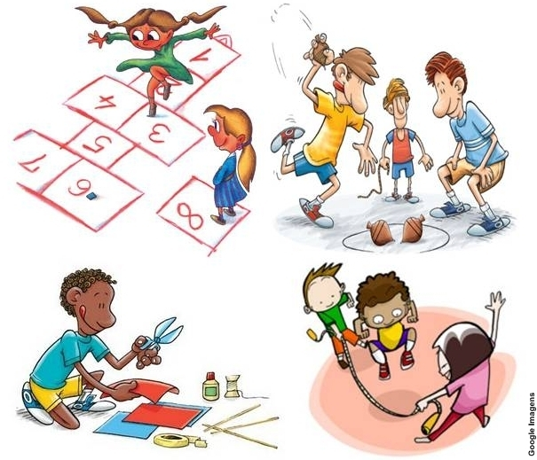

Jogos e Brincadeiras Tradicionais
Trabalho interdisciplinar jogos e brincadeiras tradicionais.
O que são jogos e brincadeiras tradicionais?

Durante a infância jogos e brincadeiras são fundamentais para uma criança aproveitar bastante a infância, existem jogos clássicos que crianças de todas as gerações brincaram em diferentes partes do mundo. São atividades que, em alguns casos, já jogavam as crianças da época dos faraós e da antiga Grécia. Pode ser que o nome do jogo mude dependendo da parte do mundo em que a atividade se desenvolva, e inclusive tenha algumas variações ou regras diferentes, mas na verdade são os mesmos jogos na Europa, África ou América. A sobrevivência desses jogos depende que as novas gerações os conheçam.
São jogos clássicos porque são simples, fáceis de jogar e não necessitam de grande desembolso de dinheiro e estimulam o raciocínio, a lógica, o equilíbrio, o desenvolvimento motor e a capacidade de fazer amigos.
História dos jogos e brincadeiras
As brincadeiras e jogos não tem uma pessoa que inventou, foram passadas de geração em geração. Após algumas pesquisas revelaram que os jogos surgiram no século XVI, e que os primeiros estudos foram em Roma e Grécia, com propósito de ensinar letras. Com o início do cristianismo, o interesse decresceu, pois tinham um propósito de uma educação disciplinadora, de memorização e de obediência. Devido a esse acontecimento, os jogos foram vistos como ofensivos, imorais, que levam à comercialização profissional de sexo, da bebedeira.
Tudo que se sabe é que essas brincadeiras surgiram há muito tempo. É o caso, por exemplo, da amarelinha. Os cidadãos da Grécia Antiga brincaram de amarelinha, de empinar papagaios e de jogar bolinhas no chão. E isso foi passado para outros povos até chegar a nossa realidade.
Alguns tipos de brincadeiras e jogos mais conhecidos
Pipa
Pipa, papagaio, arraia, raia, quadrado, pandorga... As pipas apareceram na China, mil anos antes de Cristo
Amarelinha
Essa brincadeira tão tradicional entre as crianças brasileiras também é chamada de maré, sapata, avião, academia, macaca etc. A amarelinha tradicional é desenhada no chão com giz e tem o formato de uma cruz, com um semicírculo em uma das pontas, onde está a palavra céu, lua ou cabeça. Depois vem a casa do inferno (ou pescoço) e a área de descanso, chamada de braços (ou asas), onde é permitido equilibrar-se sobre os dois pés. Por último, a área do corpo (ou quadrado).
Ciranda
A famosa dança infantil, de roda, conhecida em todo o Brasil, teve origem em Portugal, onde era um bailado de adultos.
Queimada
A queimada é uma brincadeira coletiva, em que as crianças dividem-se em dois grupos e têm de acertar a bola em algum jogador do time adversário, sem que ele consiga segurar a bola. Ganha o time que “queimar” primeiro todos os adversários.
Cabra-cega
Uma criança fica com os olhos vendados e não pode ver nada. Ela tenta adivinhar qual é o amigo que está na frente. Aqui vale prestar atenção no formato da orelha, nariz e mãos.
??????
???????
?????????